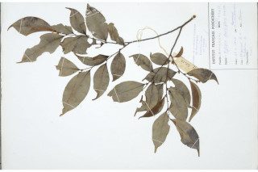

Images :



| Habit : | Trees , up to 25 m tall. |
| Leaves : | Leaves simple , alternate , distichous ; petiole 0.5-1 cm long, planoconvex ; lamina 7-9 x 2.5-4 cm, usually elliptic , sometimes narrow elliptic , apex acuminate with blunt tip, base acute , chartaceous , glabrous ; midrib slightly canaliculate above; secondary_nerves 6-8 pairs, slender; tertiary_nerves admedially_ramified . |
| Inflorescence / Flower : | Flowers axillary clusters, subsessile , brown, petals tomentose . |
| Fruit and Seed : | Cluster of several seeded berries , obovate , 3 x 2 cm, subsessile . |